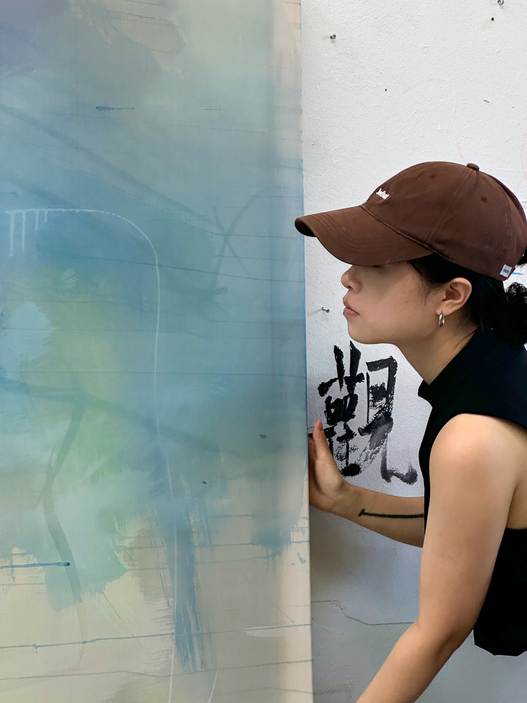

Tong Yin (b. 1998, Anhui, China) received her BFA in Oil Painting from the Central Academy of Fine Arts in 2020. She is currently studying at the Berlin University of the Arts and lives and works between Berlin and China.
Contact


Tong Yin (b. 1998, Anhui, China) received her BFA in Oil Painting from the Central Academy of Fine Arts in 2020. She is currently studying at the Berlin University of the Arts and lives and works between Berlin and China.